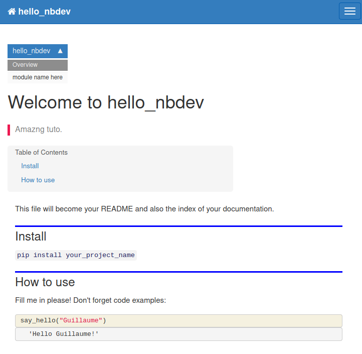
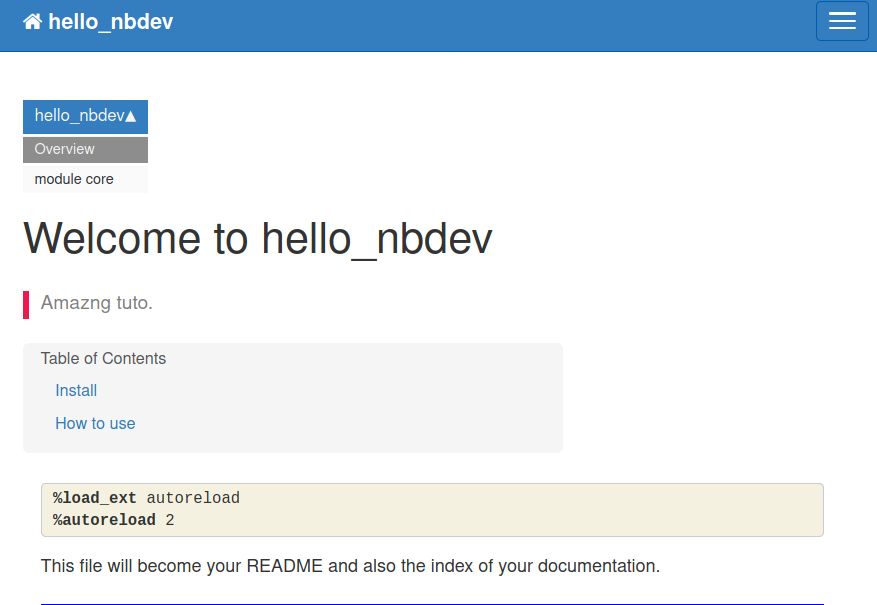

say_hello("Guillaume")'Hello Guillaume!'Everything is under nbdev website.
3 resources worth to be mentioning: * nbdev tutorial video on youtube; 1 year old but seems still valid * nbdev tutorial page * nbdev github repo
What I plan to do is to watch the video part, and keep note of my progress in this blog entry.
As suggested by Jeremy, I start by creating a github repo named hello_nbdev from a nbdev template.
It is just about clicking this link: https://github.com/fastai/nbdev_template/generate. If I am logged in github it will show the proper page.
Documentation will be hosted at github (can be hosted anywhere but github seems a straightforward option) and to do that we have to setup github pages:
Settings > Options > Github pages > Source > Master (branch) > /docs (folder) > Save
And when done 
Now we can insert this doc url as our repo website setting:
repo home > <> code > about (edit repo details) > Website
Everything is in this file.
Just edit directly from github.
lib_name = nbdev_template
# For Enterprise Git add variable repo_name and company name
# repo_name = analytics
# company_name = nike
user = fastai
# description = A description of your project
# keywords = some keywords
# author = Your Name
# author_email = email@example.com
# copyright = Your Name or Company Nameto
lib_name = hello_nbdev
user = castorfou
description = A tutorial walkthrough with nbdev
keywords = fastai nbdev tutorial
author = Guillaume Ramelet
author_email = guillaume.ramelet@gmail.com
copyright = Guillaume R.and commit changes
~/git/guillaume$ git clone git@github.com:castorfou/hello_nbdev.git
Cloning into 'hello_nbdev'...
remote: Enumerating objects: 106, done.
remote: Counting objects: 100% (106/106), done.
remote: Compressing objects: 100% (94/94), done.
remote: Total 106 (delta 7), reused 81 (delta 4), pack-reused 0
Receiving objects: 100% (106/106), 1.02 MiB | 2.45 MiB/s, done.
Resolving deltas: 100% (7/7), done.It is not specifically mentionned in the video. For this walkthrough I will use my existing fastai environment.
~/git/guillaume$ conda activate fastai
~/git/guillaume$ nbdev_
nbdev_build_docs nbdev_diff_nbs nbdev_test_nbs
nbdev_build_lib nbdev_fix_merge nbdev_trust_nbs
nbdev_bump_version nbdev_install_git_hooks nbdev_update_lib
nbdev_clean_nbs nbdev_nb2md nbdev_upgrade
nbdev_conda_package nbdev_new
nbdev_detach nbdev_read_nbsAs expected nbdev is already integrated in it.
Otherwise my guess is that I have to run conda install -c fastai nbdev under my python env.
(fastai) ~/git/guillaume/hello_nbdev$ nbdev_install_git_hooks
Executing: git config --local include.path ../.gitconfig
Success: hooks are installed and repo's .gitconfig is now trustedIf needed in case of conflict, Jeremy explains one can call nbdev_fix_merge filename.ipynb and it will use the standard conflict marker to help you identify and fix the conflict.
Just following Jeremy’s instructions. * Create say_hello function * Use it (example) * Test it (assert)
We can call nbdev_build_lib from anywhere in the repo.
(fastai) ~/git/guillaume/hello_nbdev$ nbdev_build_lib
Converted 00_core.ipynb.
Converted index.ipynb.and it creates files, under hello_nbdev
hello_nbdev$ ls hello_nbdev/
core.py __init__.py _nbdev.py __pycache__There are 2 levels of documentation. Documentation for your library that will be in index.ipynb and documentation for your modules that will be directly created from your code/notebooks 00_core.ipynb, etc
And to generate this documentation it will be just a matter of calling nbdev_build_docs.
Documentation (what will be puclished) is in index.ipynb.
This is an actual documentation. Documentation won’t be written in markdown. It will be executed as code and rendered as such. How great is that.
To make it happen we have to import our lib just freshly generated.
And now we can use all the part of our lib to explain how it works and why it is great.
say_hello("Guillaume")'Hello Guillaume!'We have to call nbdev_build_docs from our repo root.
(fastai) ~/git/guillaume/hello_nbdev$ nbdev_build_docs
converting: /home/explore/git/guillaume/hello_nbdev/00_core.ipynb
converting /home/explore/git/guillaume/hello_nbdev/index.ipynb to README.mdHere is the list of files to be pushed:
git status
Changes to be committed:
modified: 00_core.ipynb
new file: 00_core.py
new file: Makefile
modified: README.md
new file: docs/_config.yml
modified: docs/_data/sidebars/home_sidebar.yml
new file: docs/_data/topnav.yml
new file: docs/core.html
new file: docs/index.html
modified: docs/sidebar.json
new file: hello_nbdev/__init__.py
new file: hello_nbdev/_nbdev.py
new file: hello_nbdev/core.py
modified: index.ipynb
new file: index.pyJust add from .core import * to __init__.py
!cat /home/explore/git/guillaume/hello_nbdev/hello_nbdev/__init__.py__version__ = "0.0.1"
from .core import *So that we can easily use hello_nbdev without mentioning core module
(fastai) ~/git/guillaume/hello_nbdev$ git commit -m 'initial commit'
[master 3484db7] initial commit
15 files changed, 520 insertions(+), 31 deletions(-)
create mode 100644 00_core.py
create mode 100644 Makefile
create mode 100644 docs/_config.yml
create mode 100644 docs/_data/topnav.yml
create mode 100644 docs/core.html
create mode 100644 docs/index.html
create mode 100644 hello_nbdev/__init__.py
create mode 100644 hello_nbdev/_nbdev.py
create mode 100644 hello_nbdev/core.py
create mode 100644 index.py
(fastai) ~/git/guillaume/hello_nbdev$ git push
Enumerating objects: 30, done.
Counting objects: 100% (30/30), done.
Delta compression using up to 12 threads
Compressing objects: 100% (19/19), done.
Writing objects: 100% (21/21), 4.87 KiB | 2.44 MiB/s, done.
Total 21 (delta 7), reused 0 (delta 0)
remote: Resolving deltas: 100% (7/7), completed with 5 local objects.
remote:
remote: GitHub found 1 vulnerability on castorfou/hello_nbdev's default branch (1 low). To find out more, visit:
remote: https://github.com/castorfou/hello_nbdev/security/dependabot/docs/Gemfile.lock/nokogiri/open
remote:
To github.com:castorfou/hello_nbdev.git
3aec9f4..3484db7 master -> masterhttps://castorfou.github.io/hello_nbdev/

Now that we have a 1st simple example up and running, we can go further with: * classes * autoreload tip * launch nbdev_build_lib from jupyter * run tests in parallel
Following tutorial, we can create class HelloSayer and document our methods by calling show_doc(HelloSayer.say).
We can decide to add entries into index.ipynb if this is something worth having at the library level.
By adding these lines
%load_ext autoreload
%autoreload 2your notebook automatically reads in the new modules as soon as the python file changes
Make it your last cell
from nbdev.export import notebook2script; notebook2script()Converted 00_core.ipynb.
Converted index.ipynb.Just run nbdev_test_nbs
If your notebook starts with _, it will be excluded from the test list.
Jekyll is the web server to properly render documentation. This is what is used at github pages.
From https://jekyllrb.com/docs/installation/ubuntu/,
sudo apt-get install ruby-full build-essential zlib1g-dev
Install variables to use gem:
echo '# Install Ruby Gems to ~/gems' >> ~/.bashrc
echo 'export GEM_HOME="$HOME/gems"' >> ~/.bashrc
echo 'export PATH="$HOME/gems/bin:$PATH"' >> ~/.bashrc
source ~/.bashrcInstall Jekyll and Builder:
gem install jekyll bundler
From our docs folder, launch bundle install
(fastai) ~/git/guillaume/hello_nbdev/docs$ bundle install
Fetching gem metadata from https://rubygems.org/.........
Using concurrent-ruby 1.1.7
....
Bundle complete! 4 Gemfile dependencies, 90 gems now installed.
Use `bundle info [gemname]` to see where a bundled gem is installed.From repo root, launch make docs_serve
(fastai) ~/git/guillaume/hello_nbdev$ make docs_serve
cd docs && bundle exec jekyll serve
Configuration file: /home/explore/git/guillaume/hello_nbdev/docs/_config.yml
Source: /home/explore/git/guillaume/hello_nbdev/docs
Destination: /home/explore/git/guillaume/hello_nbdev/docs/_site
Incremental build: disabled. Enable with --incremental
Generating...
GitHub Metadata: No GitHub API authentication could be found. Some fields may be missing or have incorrect data.
done in 0.098 seconds.
/home/explore/gems/gems/pathutil-0.16.2/lib/pathutil.rb:502: warning: Using the last argument as keyword parameters is deprecated
Auto-regeneration: enabled for '/home/explore/git/guillaume/hello_nbdev/docs'
Server address: http://127.0.0.1:4000/hello_nbdev//
Server running... press ctrl-c to stop.It is available locally at http://127.0.0.1:4000/hello_nbdev/

I have not gone through pypi publication and console_scripts.
I don’t have the need for the moment, if I need that I will add an entry here.